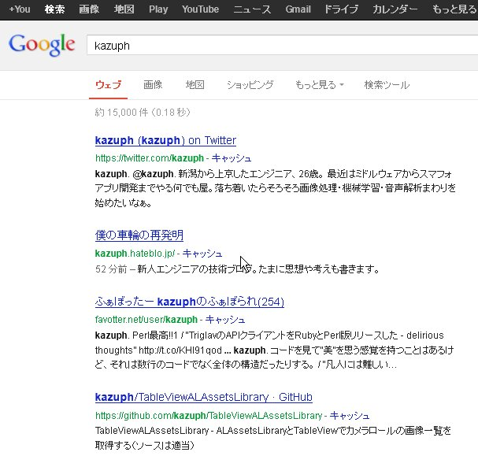
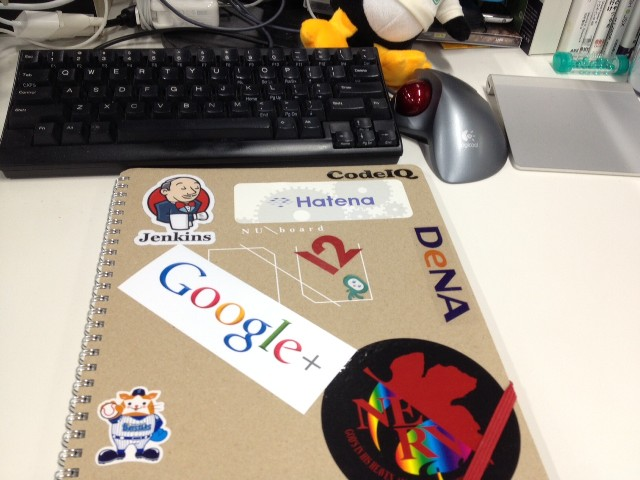
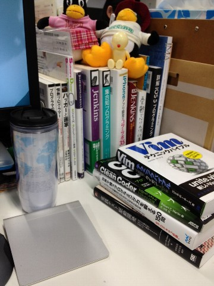
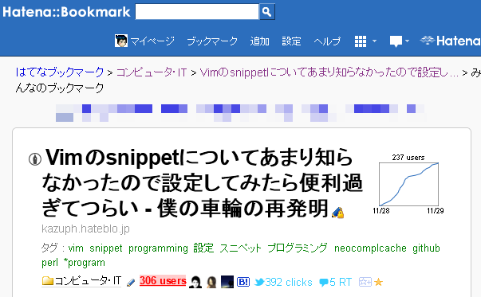
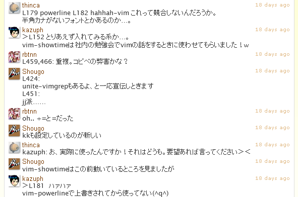

僕と僕のはてブとgithubとVimの付き合い方
@kazuph
2012/11/30
自己紹介
自己紹介

- ID:@kazuph
- 「かずふ」って読みます
- 2年目エンジニア
- プログラミングは大学から
- 使用言語：Perl, Objective-C, JavaScript, Java
- エディタ: Vim
- 最近はスマフォアプリつくってます。
ググればたくさん出てきます

ググって出てこない
僕の机 1

僕の机 2

僕の机 3

僕 と はてブ
直近
- Vimの記事を書いたらたくさん「はてブ」もらえました！

はてブとは？
- はてブ＝はてなブックマーク
- おそらく日本のエンジニアが最もよく使っているソーシャルブックマークサービス

僕のはてブ歴一覧
http://b.hatena.ne.jp/entrylist?sort=count&url=kazuph.hateblo.jp

だからなんなの？
はてブ歴からわかる人となり

自称でなく他人から後押しされた証拠があるということ
はてブ数＝戦闘力
- まわりから見た場合の分かり易い指標
- （はてブされたことがない＝戦闘力0ではないけどね）
例
- 「Vim戦闘力300！しかもまだまだ上がっている…だと！？」
- 「Perl戦闘力…たったの13か…ゴミめ」
晒されるデメリット
- 数値化されてしまうことで逆に低く見られてしまうかもしれない
- 炎上してしまうかも？w
逆に
晒されるメリット
- 世界中の人の目に届く
- 実力が上の人からフィードバックをもらえるかも
- そのやり取りが誰かの役に立つかも
「公開」するとすごい人達に
鍛えてもらえる可能性も！
エンジニアにとって
「公開する」と言えば
僕 と github
githubとは？
- ネット上でソース管理ができるサイト
- ＋SNSが融合したサービス

世界中の開発者のコードを見ることができる
世界中の開発者達のやりとりを見ることができる
逆に自分がその一員にも
なれるかもしれない
そんな素敵な
サービス
僕とgithub 1
- github単体で動作（サーバーいらない

僕とgithub 2

僕とgithub 3
- 動作はdotcloudで

僕とgithub 4
- github単体で動作（サーバーいらない

僕とgithub 5
- github単体で動作（サーバーいらない

僕とgithub 他にも色々
- 自分のVimとかターミナルの設定
- その他の発表資料
- 技術系の専門書を写経したコード
- etc.
そう何気なくVimの設定をあげていたら・・・
僕 と Vim
vimとは
- Vimはテキストエディタ
- vimrcというvimの設定ファイル
- 人によって設定ファイルの個性に違いがある
突然の連絡！

！

快諾？

vimrc読書会
- vim仙人が出没して教えを請う場所
- vim界の登竜門（たぶん、かな？ちがうか
- 初級Vimmerの自分としてはかなり畏れ多い場所・・・
vimrc読書会に参加

沢山の凄腕Vimmerにdisられる
チャットルームの様子 
vimrc読書会終了

「人は叩かれて
成長する。」
公開したらすごい人達に鍛えてもらえた！
まったく予期していないイベントだったけど、
githubに公開してなかったら参加できなかったイベント
公開することで
広がる縁
「自分」を公開していて良かった！
まとめ
- ブログを書こう、githubにコードを上げよう
- 車輪の再発明は恐れず、今の成長途中の「自分」を公開しよう
- 結果はネットにゆだねよう
- 偶然の縁を大切にしよう